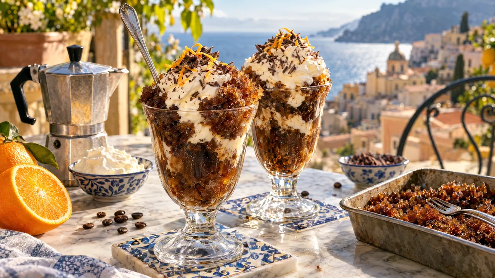

RESTFEST · RECEPTDessert
Kaffegranita på morgonens kaffe med vispad grädde
Kaffet som blev kvar i bryggaren, lite socker och en form i frysen. Kaffet skrapas med en gaffel var halvtimme tills det blir glittrande, mörka iskristaller, som serveras i kalla glas under ett moln av lättvispad grädde och riven choklad. Den sicilianska klassikern, gjord på kaffe som annars hamnar i vasken.
- Förberedelse
- 10 min + 3–4 tim i frysen
- Tillagning
- 0 min
- Portioner
- 4
- Nivå
- Nybörjare
 Det här behöver du
Det här behöver du
Tryck på + vid det du behöver köpa.
Granita
Grädde
Till servering
Gör så här
- Rör ut sockret och saltet i det varma kaffet tills det har löst sig. Det ska smaka lite för sött, sötman dämpas när det fryser.
- Låt kaffet svalna och häll det i en grund form, gärna av metall, ca 20 × 30 cm. Ju grundare form, desto snabbare fryser det.
- Ställ formen i frysen. Efter ca 45 minuter har kanterna börjat frysa. Skrapa isen med en gaffel från kanterna in mot mitten.
- Skrapa igen var 30:e minut i 3–4 timmar, tills allt har blivit lösa, fluffiga iskristaller.
- Ställ 4 glas i frysen 10 minuter före servering.
- Vispa grädden med florsocker och vaniljsocker till mjuka toppar.
Dekoration och servering
- Skrapa granitan en sista gång och skeda den i de kalla glasen, gärna i lager med grädden.
- Toppa med ett moln av vispad grädde och riv choklad och apelsinskal över.
- Servera direkt med en långskaftad sked, granita smälter fort.
- Granitan håller i frysen i en vecka. Skrapa upp den med en gaffel före servering.
- Byt grädden mot vispbar havregrädde för en vegansk variant.
Mått och ugnstemperaturer
Måtten är svenska (dl, msk, tsk, krm). Ugnstemperaturerna gäller vanlig ugn med över- och undervärme; med varmluft, sänk med 20 grader.